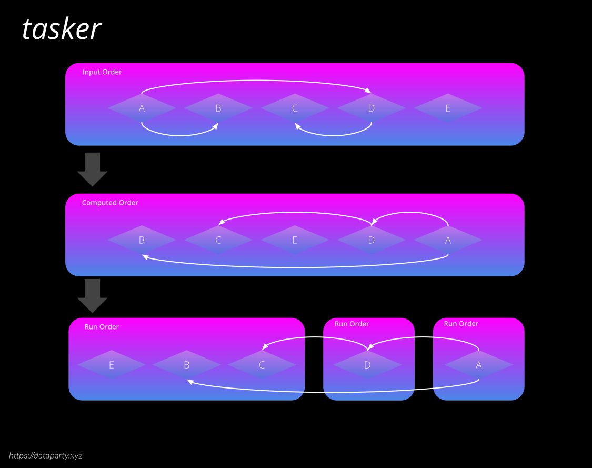

Tasker


Tasker is a parallel task runner with dependency resolution and results collection.
- Documentation - datapartyjs.github.io/tasker/
- NPM - npmjs.com/package/@dataparty/tasker
- Code - github.com/datapartyjs/tasker
- Social - @dataparty
- Support - liberpay/dataparty
Design
Tasker provides a Runner class which manages depedencies, tasks and results. The runner class utilizes the dependency-solver npm package. When possible upto Runner.parallel foreground tasks will be run at the same time. When background tasks are added to the Runner they are started immeditaly and do not count against the parallel limit.

Consumers of the library are expected to extend the Task class to later instantiate and add instances to a runner. Tasks are added by calling Runner.addTask(myTaskInstance).
For more details see documentation:
Foreground Tasks
By default tasks are in the foreground. Tasks can be defined either with a function or by subclassing. See a complete tutorial.
Define task using function
let sleepThirty = async ()=>{
return new Promise((resolve,reject)=>{
setTimeout(resolve, 30*1000)
})
}
let myTask = Tasker.Task({
name: 'sleep-30',
exec: sleepThirty
})
runner.addTask(myTask)
Define task with subclass
class SleepTask extends Tasker.Task {
constructor(durationMs){
this.duration = durationMs
this.timeout = null
}
async exec(){
return new Promise((resolve,reject)=>{
this.timeout = setTimeout(this.onTimeout.bind(this), 30*1000)
})
}
}
onTimeout(){
this.timeout = null
console.log('sleep complete')
}
stop(){
if(this.timeout !== null){
clearTimeout(this.timeout)
this.timeout = null
}
}
}
let sleepThirty = new SleepTaks(30*1000)
runner.addTask(sleepThirty)
runner.start()
Background Tasks
Background tasks do not count against the parallel task limit. On failure background tasks are restarted immediatly and will be kept running indefinitly. Background tasks only ever stop if they are explicitly cancelled.
How to implement a background task
- You must set the constructor property
Task.backgroundto true during task construction. - You must implement a
Task.exec()function which returnsTask.detach() - You must implement a
Task.stop()function which stops your tasks. - Call
Task.backgroundResolve(value)when stopping successfully or due to a call toTask.stop(). - Call
Task.backgroundReject(value)when stopping due to failure.